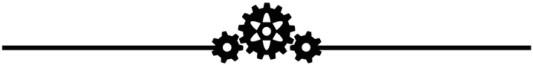

第一章
廄外的世界
OUT OF STABLE

「因為在二號避難廄，無馬曾進，無馬能出。」
灰色
維修間的牆壁全都是非常單調黯淡的灰色。不過我正盯著的這面牆有個優點：它是非常乾淨的灰色。嗶嗶小馬出名地耐用可靠，所以作為避難廄的嗶嗶小馬技術員，代表會有好一段時間無所事事。身為嗶嗶小馬技術員的學徒，意味著所有無聊的日常雜務都會丟給我做，我的師傅則躲在後面的房間裡睡大覺。而日常雜務就比如擦洗牆壁。
“這面牆需要一幅壁畫。”
我放任自己浮想聯翩，幻想著監督同意指派繽紛色板(Palette)，親自把我們整個維修間變成她鮮豔多彩的傑作之一。繽紛色板是二號避難廄裡最傑出的畫家，就像所有技藝精湛的藝術家，她也是避難廄的瑰寶。
二號避難廄裡的生活會蠶食你的心靈，而且無可避免——你出生在避難廄裡，一生都活在避難廄裡，你也將死在那裡，而在你的可愛標記派對上，就能看到自己的一生大致都被安排好了。因此監督堅持要求每週在避難廄的廣播曲目中增加一首新歌、把公共區域粉刷得鮮亮，並裝飾振奮馬心、鼓舞士氣的壁畫，以及定期在中庭舉辦派對……
一切努力都是為了轉移注意力以減緩憂鬱的情緒。就在我盯著那無盡空虛的灰時，現實又再次衝擊了我。美化維修區的優先度本來就低的可悲了，而嗶嗶小馬技術員的維修間又是維修區裡馬流量最少的區域之一。當我開始意識到自己下半輩子幾乎每天都得盯著同一面灰牆時，雙耳就垂了下來。
“哦，親愛的。妳還好嗎？”
然後她就出現了。薇薇．萊米，是位絕美的炭黑色獨角獸，她的白色鬃毛間點綴著彩色條紋，她的嗓音如絲綢般柔和，又如上等巧克力般濃郁，而她現在就站在維修間門口。我馬上就慶幸自己早已打掃完畢，同時又為這個房間配不上她的身分而感到羞愧。
難以置信，她就站在那裡。我曾在晚會看著舞臺上的她；我不斷地聆聽她的歌曲，並把每一首新歌都錄到我的嗶嗶小馬上，這樣我就能隨時聽了。我招了，我和其他至少三百匹小馬一樣，多年來迷戀著薇薇．萊米。我媽過去常常笑話這事。
“小皮呀，”她會和她的朋友一起咯咯笑著說，“薇薇．萊米的小後門是不會為妳敞開的。”我花了好幾年才明白當時我媽說的是什麼意思。隨後我花了好幾秒才意識到薇薇．萊米剛剛問了我什麼。
“什……什麼……蛤？”
多麼精彩的回答啊，小皮。真是太優雅了。我真想在水泥地上挖個洞，再用碎石把自己埋進去。
她甜甜地笑著。她對我笑了！
然後她用那令馬驚嘆的嗓音說，“我進來時妳看起來非常傷心。我能做些什麼嗎？”
薇薇·萊米想要──幫助──我！
我震驚地回過神來，薇薇．萊米一定是有什麼事才會下來這裡，跟嗶嗶小馬有關的事。畢竟她應該不會在維修區四處閒逛。我環顧四周，意識到自己是唯一在值班的小馬。我的師傅像往常一樣在他的辦公室裡打盹。
“噢…...不，沒–沒什麼。”我試著恢復鎮定，“需要我幫什麼忙嗎？”
薇薇．萊米半信半疑的表情中帶著同情，但她抬起一隻前蹄，讓她的嗶嗶小馬進入我的視線之中。一個比我的更精緻的型號，上面飾有她的姓名縮寫和可愛標記(一隻展翅舒翼引吭高歌的美麗小鳥)，將它點綴得十分高雅。
“我真不想麻煩妳，但是它把我的腿磨得很痛，妳能換一下襯墊嗎？”
“哦，當然可以！”我早已飄起能解開嗶嗶小馬的專用鑰匙(作為一名嗶嗶小馬技術學徒，我有各種精密的特殊工具，裝在我多功能馬鎧的口袋裡)。
“我馬上就能搞定！”咔嗒一聲，嗶嗶小馬便應聲脫落。
薇薇·萊米放下蹄子，遲疑地輕笑了下。“噢不，沒關係的，不用急。我要回房間幫這條腿擦點藥膏，再休息到下午。”
沒錯！薇薇．萊米明晚將在二號避難廄的沙龍演出！我得把她的嗶嗶小馬拋光，才配得上她的腿。如果熬個夜，還可以把它全面調校得如同她剛拿到的那天一樣流暢運作，而且還來得及在演出前還給她。
“沒問題！明天的這個時候我就會還給妳了，我保證妳不會失望的！”
她再次對我微笑，這下世上所有的灰暗都無法掩蓋我的好心情了。“謝謝妳。”然後她轉身就走。我看著她，直到她的可愛標記消失在門邊。她離開了。
隔天，我一邊用口哨吹著薇薇．萊米的歌，一邊沿著走廊走向她的房間。
她的嗶嗶小馬盤旋在我身旁的懸浮術力場中，我用能找到最好的材料填充襯墊，使它看起來煥然一新，耀眼奪目。我因為徹夜工作而感到疲勞，但情緒高昂，薇薇．萊米一定會對我的工作成果非常滿意！
轉過拐角，我被一大群聚在薇薇·萊米房間外的小馬嚇的從幻想中清醒過來。靠，我得從要蹄印的馬和狗仔隊之間闖出一條路。我把嗶嗶小馬飄得更高後，開始從馬群中擠出一條道。
“她不見了！”
“她怎麼能走？”我周圍的竊竊私語和驚慌的嘶鳴聲，愈發令馬不安。“她為什麼要拋棄我們？”
不見了？薇薇．萊米……不見了？
而接下來這句話讓我直接愣住了。“我從沒想過避難廄的大門居然還能打開！”
她去了外面？！？
“別擔心，各位小馬！”監督宏亮的嗓音從馬群中響起，“我有避難廄裡每一匹小馬的標記，我會親自派遣救援隊，今天就能把薇薇找回來。不要擔心。”
我感覺自己像被濕冷的水泥淹沒，我的目光慢慢移向漂浮在我上方的嗶嗶小馬。
我低下頭，慢慢地向後想退出馬群，將嗶嗶小馬緊緊的飄在身邊。等監督調出薇薇·萊米標記後，大家找到的不會是薇薇，而是放在維修間的嗶嗶小馬……
碰的一聲！我後退時撞到了某匹小馬，讓我嚇到懸浮場“噗”的一聲消失了。那個閃亮潔淨的嗶嗶小馬哐噹一聲掉在地上。一轉頭，我發現自己正好和監督四目相交。
我轉過頭，發現自己正和監督對視著。
她一言不發，將目光移向地上的嗶嗶小馬。薇薇．萊米的姓名首字母和可愛標記清晰可見。
“這...是...什麼？”監督緩緩說道，語帶威脅。
所有目光都轉向我。我可以感覺到每一對注視的眼神。沒有小馬出聲，令馬窒息地沉默如同一條鉛毯壓下。我口乾舌燥，發不出一點聲音。
但我不需要出聲，也能感受到陣陣恨意。這裡有一堆薇薇·萊米的粉絲，而我就是害他們失去偶像的罪魁禍首。
監督的聲音低沉卻出奇地溫和。“拿好它，回妳的房間去，馬上。”她不用說第二遍。
那天晚上，我躺在床上，一邊用蹄子撥弄著薇薇·萊米的嗶嗶小馬，一邊聽著我自己的嗶嗶小馬一遍遍地播報白天發生的悲劇。
我還是不敢相信薇薇·萊米不見了。我想不通，她怎麼能離開呢？她為什麼要走？
二號避難廄的大門一直是封得死死的，就算能被打開，也只有監督知道方法。很顯然，它的確能開。
但是為什麼呢？就算外面真的有什麼，也不會有小馬知道。歷史書上說，外面的世界寸草不生，滿目瘡痍，這至少是個大家都認可且合乎邏輯的假設。我第一次（也是唯一的一次）參加睡衣派對時聽過一個鬼故事，嚇得我做了好幾次恐怖的噩夢，那些夢現在還潛伏在我的意識裡蠢蠢欲動。故事內容是這樣的：一隻小馬不知怎麼的打開了避難廄的大門走了到外面……然後發現根本就沒有什麼“外面”！只有無邊無際的虛無，一下子將她卷走，撕裂她的靈魂，讓她也化為那無盡虛空的一部分……
按常識來看，我知道這不可能，但那令馬毛骨悚然的場景還是在我的腦海裡不斷縈繞。
我只弄清了兩件事：第一，薇薇·萊米讓我取下她的嗶嗶小馬，是為了不被監督追蹤；第二，我被她騙了。
我個頭是同齡小馬中最小的，可愛標記也是最晚出現的，這使我在同輩中沒有任何朋友。說實話，我媽也沒能幫我交到什麼朋友。更何況，她在我第一次睡衣派對上突然醒過來大吼大叫，完全是幫倒忙。我一直形單影隻，但至少我也沒有和誰結過仇。避難廄的小馬常常把我當空氣，但也至少沒有小馬記恨我。
不過我不能責怪他們，即使這對我根本就不公平。他們心煩意亂，要找一隻替罪馬洩憤。新聞並沒有提到我的名字，只是說“薇薇·萊米定制的嗶嗶小馬在一個嗶嗶技師那裡找到”。但是避難廄一共就只有兩個嗶嗶技師，就算之前在她房間外的那一幕沒有發生，要找出我也很容易。
監督正在廣播中發言。“這是我們大家共同的損失，但我要提醒每隻小馬，這是薇薇·萊米自己的選擇。她選擇離開自己的家，拋棄了同屬這個家的我們。她背叛了我的信任，也背叛了你們的信任，她為了確保自己不被追蹤，耍花招欺騙一個嗶嗶小馬技師取下她的嗶嗶小馬，更是背叛了那個技師的信任。我明白你們很多馬都感到憤怒、傷心，但我呼籲大家，千萬不要遷怒於無辜……”
儘管我很感激她的話，但是這仍不能改變我每天將要面對的那些仇視。即使每隻小馬都把怨恨藏在心裡，他們的憤懣仍像揮之不去的塵埃籠罩著我的世界。
我把注意力轉移到那個惹起事端的嗶嗶小馬上，注意到有一個檔被加密了。我昨天就注意到了它，以為它可能是一首沒有完成的新歌。我當時並不想播放它，一方面是出於對薇薇·萊米隱私的尊重，另一方面，我相當討厭提前知道內容。但現在這一切已經不再重要了，因為這首歌永遠不會被正式發佈了。
我打開多功能馬鎧的一個口袋，拿出破解工具，安全又輕鬆地破解了檔的加密。這是一個音訊檔。我按下了播放鍵。
“打開二號避難廄大門的超控密碼是…… CMC3BFF。”
我驚坐起來，迅速關掉廣播，又重新放了一遍。
我認不出這聲音。這聲音屬於一隻雌駒，嗓音非常甜美，還帶著奇怪的口音，聽起來不像避難廄中任何一隻小馬。但現在，我起碼知道薇薇·萊米是怎麼離開的了。
我當時一定在那裡坐了好幾個小時，思忖自己應該怎麼做。最終，我做出了決定。
我要去外面追她，我要把她帶回來。
我佇立著，凝視著那面將二號避難廄和外部的種種危險（或者一片虛無！）隔絕開來的鋼鐵大門。兩名守衛擋住了我的去路。我的鞍包塞滿了蘋果和其他必需品，我甚至還裝了一本《神秘科學百科全書(Big Book of ArcaneSciences)》讓自己有東西能看，還在自己脖子上掛了兩個水壺。我已經準備好了，但監督已經確保了不會有小馬效仿薇薇做出同樣的舉動。
我再怎麼堅持，再怎麼對他們怒視，也是徒勞。我的獨角發著光，但他們仍一動不動，視而不見，絲毫不讓我靠近控制台。
“喂，你不就是那只讓我們的薇薇在外面走丟的小馬麼？”其中一名守衛恐嚇似的踏前一步，兇狠地喝問。另一名則厭惡地別過頭去，我不確定他是在討厭我，還是他和監督一樣看不慣其他小馬拿我出氣。考慮到我接下來要做的事，我衷心希望是前者。
哐！
一個金屬鎖箱突然落到他們頭上，兩名守衛被砸得當場失去意識。陸馬就是這樣——他們永遠也不會提防獨角獸念力飄浮起來的東西。
我來到控制台前，剛輸入從薇薇的嗶嗶小馬中得到的密碼，監督的聲音就突然從旁邊的擴音器爆響起來。
“停下！我命令你立刻停下！”
我才不聽你的呢。
“衛兵！所有衛兵去二號避難廄大門！攔住那個丫頭！”
哦豁，完蛋了！
我迅速將蹄子伸向大門的主控開關，暗暗向塞拉斯蒂婭(Celestia)祈禱密碼還有效，緊接著便用盡全身的力氣，猛地扳下開關。
一聲鏗鏘巨響讓一切都為之撼動，嘶嘶噴出的蒸汽和持續低沉的隆隆聲使房間震動不已。我看見二號避難廄大門上巨大的門閂滑動著退了回去，一個龐大的鉸接機械臂向下轉動，連接到大門上。隨著一陣讓我牙齒打顫的尖利長嘯，那扇鋼鐵巨門終於打開了。
目睹此景，我仿佛聽見我媽在說“二號避難廄的馬廄小門可不會這樣打開的”。事實上，二號避難廄的大門根本就不應該移動分毫。儘管是我扳下的開關，但看見它真的打開時，我只感到頭暈目眩。
“小皮，你不需要這麼做……不是嗎？”監督的聲音讓我一下子從恍惚中恢復過來。我能聽到守衛飛奔的蹄聲越來越近。
我向大門踏出一步，“別擔心，我會帶她回來的。”
“不，你不會！一旦你離開這裡，就再也別想進來！”
霎時，不公平的感覺刺痛了我。監督之前還願意派出搜查小隊帶薇薇回來呢。話說回來，薇薇如此特別，但我……不是。
此時，我有點想馬上回頭，爬回我的房間裡，留住自己那沉悶但安全的生活。
但隨即我便振作了起來，毅然決然地踏出了那扇大門。
嘶嘶聲漸漸隱去，隨著最後的一聲巨響，二號避難廄的鋼鐵大門在我身後無可挽回地關上了。
我不知道自己原本期望在門外看到什麼，但肯定不是這條漆黑一片，散發著爛木頭和墳墓氣息的長廊。我不在避難廄裡，但也沒真正到外面。我大概身處在兩個世界之間的一個夾縫裡。
我打開嗶嗶小馬的照明燈，立刻就嚇得向後一跳，倒吸一口涼氣。走廊裡到處都是死去已久的小馬的骸骨。避難廄大門外側已經被毀壞得不成樣子。我能想得出，這些想要進入避難廄的小馬死前拼命地一次次朝大門砸去，直至自己的蹄子，腿骨乃至頭骨斷裂破碎、化為齏粉。
我快步向前走去，發現這條走廊通向一個老舊的房間，房間內有向上的樓梯。樓梯頂端是一個鎖已損壞的地窖門。從外界通向二號避難廄的入口，被巧妙地偽裝成一個普普通通的蘋果窖地窖門。或者說，造它的小馬本來就是在造一個蘋果窖。
我深吸一口氣，奔上樓梯，將地窖門向外掀開，走了出去。
蹄注: LV.1升級+1
新技能：禍起紅顏(Cherchez La Filly)【譯注①】——對同性角色的傷害+10%，與特定小馬可出現特殊的對話選項。
【譯注①：此技能即《輻射：新維加斯》的百合角色專屬技能“Cherchez La Femme”的變形】